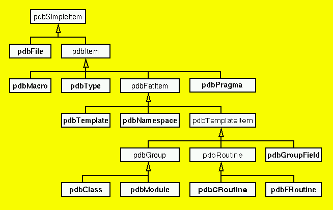

|  |
The class definitions in the following are not the real complete source code of the DUCTAPE classes but simplified versions which only show the most important and commonly used methods. Please see the DUCTAPE HTML index for complete descriptions.
| The root class of the hierarchy is pdbSimpleItem. pdbSimpleItems, and therefore all items derived from it, have two attributes, their name and PDB ID. |
class pdbSimpleItem {
public:
const string& name() const;
int id() const;
};
|
| Derived from pdbSimpleItems are pdbFiles and more complex pdbItems, which have a source code location, possibly a parent group or namespace, and an access mode (e.g., public or private) if they are member of a group. The method fullname() returns fully-qualified names (including signatures for routines). |
class pdbItem : public pdbSimpleItem {
public:
const string& fullName() const;
const pdbLoc& location() const;
const pdbGroup* parentGroup() const;
const pdbNamespace* parentNSpace() const;
access_t access() const;
};
|
| pdbItems are pdbPragmas, pdbMacros, pdbTypes, or so-called fat items. pdbFatItems have a header and a body, and attributes describing the source location of these parts. |
class pdbFatItem: public pdbItem {
public:
const pdbLoc& headBegin(void) const;
const pdbLoc& headEnd (void) const;
const pdbLoc& bodyBegin(void) const;
const pdbLoc& bodyEnd (void) const;
};
|
| pdbFatItems include pdbTemplates, pdbNamespaces, and pdbTemplateItems. pdbTemplateItems are entities that can be instantiated from templates. Template items are pdbGroups, pdbGroupFields, pdbRoutines. |
class pdbTemplateItem: public pdbFatItem {
public:
const pdbTemplate *isTemplate() const;
bool isSpecialized() const;
const targvec& speclArguments() const;
};
|
| Groups represent abstract data types, i.e. collections of public and private members. Members are divided into data members (described by pdbGroupFields) and member functions/methods (described by pdbRoutines). The different kind of groups are Fortran 90 derived types or modules, or C and C++ structs, unions, or classes. |
class pdbGroup : public pdbTemplateItem {
public:
const fieldvec& dataMembers() const;
group_t kind() const;
};
|
| Routines describes the common part of global functions, Fortran 90 local and module functions, and C++ class methods. The common atrributes are signature, kind (e.g., extern or intrinsic), specialKind (e.g., constructor or operator), a list of routines called from this routine, how often it gets called from other routines, linkage, for C and C++ the statement representing the body and a list of all statements, and for C and Fortran routines the location of the first executable statement and of all return statements. |
class pdbRoutine : public pdbTemplateItem {
public:
const pdbType *signature() const;
routine_t kind() const;
rspec_t specialKind() const;
const callvec& callees() const;
int numCalled() const;
link_t linkage() const;
const pdbStmt* body() const;
const stmtvec& statements() const;
const pdbLoc& firstExecStmtLocation() const;
const locvec& returnLocations() const;
};
|
The following conventions are used within the DUCTAPE library:
Please note that inherited methods from the generic base classes are not shown here; so these classes have actually a much larger number of methods.
| pdbFile |
class pdbFile : public pdbSimpleItem {
public:
const incvec& includes() const;
int numCalled() const;
bool isSystemFile() const;
const cmtvec& comments() const;
};
|
| pdbPragma |
class pdbPragma : public pdbItem {
public:
string kind() const;
const pdbLoc& prBegin() const;
const pdbLoc& prEnd() const;
const string& text() const;
};
|
| pdbMacro |
class pdbMacro : public pdbItem {
public:
macro_t kind() const;
const string& text() const;
};
|
| pdbType |
class pdbType : public pdbItem {
public:
const pdbType* elementType() const;
float_t floatType() const;
int_t integerType() const;
type_t kind() const;
const qualvec& qualifiers() const;
const pdbType* pointedToType() const;
const pdbType* referencedType() const;
bool isSigned() const;
const pdbType* baseType() const;
const pdbGroup* isGroup() const;
const pdbType* returnType() const;
const argvec& arguments() const;
bool hasEllipsis() const;
bool isOldStyleDecl() const; /*C*/
const pdbType* memberPointerType() const;
const pdbClass* memberPointerClass() const;
bool isConst() const;
int numElements() const; // for C arrays
// and f90 characters
const typevec& exceptionSpec() const;
const enumvec& enumeration() const;
shape_t shape() const; /*f90*/
int rank() const; /*f90*/
const boundvec& bounds() const; /*f90*/
bool isStaticArray() const; /*C99*/
};
|
| pdbTemplate |
class pdbTemplate : public pdbFatItem {
public:
templ_t kind() const;
const string& text() const;
const targvec& arguments() const;
const pdbCRoutine* funcProtoInst() const;
const pdbClass* classProtoInst() const;
const pdbType* statMemType() const;
const pdbTemplate* declaration() const;
const pdbTemplate* definition() const;
const targvec& speclArguments() const;
};
|
| pdbNamespace |
class pdbNamespace : public pdbFatItem {
public:
const memvec& members() const;
const pdbNamespace* isAlias() const;
};
|
| pdbClass |
class pdbClass : public pdbGroup {
public:
const basevec& baseClasses() const;
const classvec& derivedClasses() const;
const methodvec& methods() const;
bool isABC() const;
const friendclassvec& friendClasses() const;
const friendfuncvec& friendRoutines() const;
};
|
| pdbModule |
class pdbModule : public pdbGroup {
public:
const modfuncvec& funcMembers() const;
};
|
| pdbCRoutine |
class pdbCRoutine : public pdbRoutine {
public:
virt_t virtuality() const;
bool covariantReturnVirtualOverride() const;
bool isInline() const;
bool isCompilerGenerated() const;
bool isExplicitCtor() const;
bool isStatic() const;
bool isVirtual() const;
};
|
| pdbFRoutine |
class pdbFRoutine : public pdbRoutine {
public:
bool isRecursive() const;
bool isElemental() const;
bool hasExplicitInterface() const;
const pdbFRoutine* parentRoutine() const;
const pdbFRoutine* isAliasFor() const;
const implvec& implementedBy() const;
const locvec& stopLocations() const;
};
|
| pdbGroupField |
class pdbGroupField : public pdbTemplateItem {
public:
mem_t kind() const;
const pdbType *type() const;
bool isBitField() const;
bool isMutable() const;
bool isStaticConst() const;
};
|
| pdbLoc describes source code locations which are characterized by a source file, a line number (starting with 1), and a character position within this line (starting with 0). |
class pdbLoc {
public:
const pdbFile *file() const;
int line() const;
int col() const;
};
|
| pdbCallee is used to represent a routine call (i.e., a call site). Attributes are the routine called, whether it is was called virtually, and the location of the call site. |
class pdbCallee : public pdbLoc {
public:
const pdbRoutine *call() const;
bool isVirtual() const;
};
|
| pdbBase describes a base class (super class) of a pdbClass. It provides methods to ask for the base class, its access mode (e.g., public or private), and whether the derivation was virtual. |
class pdbBase : public pdbLoc {
public:
const pdbClass *base() const;
pdbItem::access_t access() const;
bool isVirtual() const;
};
|
| pdbMethod represents a member function (method) of a C++ class. |
class pdbMethod : public pdbLoc {
public:
const pdbCRoutine *func() const;
};
|
| pdbFriendClass describes a friend class of a C++ class. |
class pdbFriendClass : public pdbLoc {
public:
const pdbClass *friendClass() const;
};
|
| pdbFriendFunc represents a friend function of a C++ class. |
class pdbFriendFunc : public pdbLoc {
public:
const pdbCRoutine *friendFunc() const;
};
|
| pdbModFunc describes a function inside a Fortran 90 module. |
class pdbModFunc : public pdbLoc {
public:
const pdbFRoutine *func() const;
};
|
| pdbArg is used to represent a formal argument (parameter) of a routine. The argument is described by its type, its name (if available), and further attributes. |
class pdbArg : public pdbLoc {
public:
const pdbType* type() const;
const string& name() const;
bool intentIn() const; /*f90*/
bool intentOut() const; /*f90*/
bool isOptional() const; /*f90*/
bool hasDefault() const;
};
|
The source code location of the last five classes describe where the corresponding objects are declared within a C++ class definition (the location of the object identifier to be precise).
| pdbEnum describes one element of an C / C++ enumeration type by its name (identifier) and the corresponding integer value. |
class pdbEnum {
public:
const string& id() const;
int val() const;
};
|
| pdbBounds is used to describe the bounds of one dimension of a Fortran array. |
class pdbBounds {
public:
int lower() const;
int upper() const;
};
|
| pdbComment represents a comment in a source file. Comments are numbered 0 to N inside one file. The kind, its exact location, and the comment text is available. |
class pdbComment {
public:
int id() ;
PDB::lang_t kind() const;
const pdbLoc& cmtBegin() const;
const pdbLoc& cmtEnd() const;
const string& text() const;
};
|
| pdbStmt are describing statements in the body of routines. Statements are numbered 0 to N inside one routine. The kind, the exact location, and the relationship with other statements are provided: the "next" statement, "down" pointing to the first statement in a block or a "case" and the "then" part of "if", finally the "extra" pointing to the "else" part of "if", the "break" related to a "case", the first "catch" of a "try" statement, and the target of "goto", "break", and "continue". Statements are currently only available for C and C++. |
class pdbStmt {
public:
int id() const;
stmt_t kind() const;
const pdbLoc& stmtBegin() const;
const pdbLoc& stmtEnd() const;
const pdbStmt* nextStmt() const;
const pdbStmt* downStmt() const;
const pdbStmt* extraStmt() const;
};
|
|
pdbTemplateArg describes arguments in template definitions and
specializations. Depending on the kind of the template argument,
different methods are applicable:
types: type() and defaultType()
For arguments of specializations, the following applies: types: type()
|
class pdbTemplateArg {
public:
targ_t kind() const;
const string& name() const;
const pdbType* type() const;
const pdbTemplate* templateArg() const;
const string& value() const;
const pdbType* defaultType() const;
const pdbTemplate* defaultTemplateArg() const;
const string& defaultValue() const;
bool isSpecialization() const;
};
|
|
In addition, there is a class PDB that represents an entire PDB file. It
provides methods to read, write, and merge PDB files, to get the version of
the PDB file format and the programming language it got generated from.
There are also methods to get the source file inclusion tree, the static call tree, and the class hierarchy. It provides a list of all items contained in the PDB file as well as lists of all defined types, files, classes, modules, C/C++ and Fortran routines, templates, macros, and namespaces. |
class PDB {
public:
// PDB basic interface
PDB(char *fname);
~PDB();
bool write(char *fname);
void write(ostream& ostr);
bool merge(char *fname);
operator void *() const;
int version() const;
lang_t language() const;
// PDB item hierachies
pdbFile *fileTree();
pdbRoutine *callTree();
pdbClass *classTree();
// PDB item vectors
itemvec& getItemVec();
typevec& getTypeVec();
filevec& getFileVec();
classvec& getClassVec();
modulevec& getModuleVec();
croutinevec& getCRoutineVec();
froutinevec& getFRoutineVec();
templatevec& getTemplateVec();
pragmavec& getPragmaVec();
macrovec& getMacroVec();
namespacevec& getNamespaceVec();
};
|
|
A basic template for a PDB application is shown here:
After initializing a PDB object with the name of the PDB file and checking whether the initialization was sucessful, it can be used to process the items described in this file. In case of errors, error messages are written to std::cerr by the PDB constructor. Note that by defining several PDB objects more than one PDB file can be processed at once. |
#include <iostream>
#include "pdbAll.h"
int main(int argc, char *argv[]) {
// check arguments
if ( argc != 2 ) {
std::cerr << "usage: " << argv[0]
<< " pdbfile..." << std::endl;
return 1;
}
// initialize PDB object
PDB pdb1(argv[1]);
if ( pdb1 ) {
// if sucessful, process PDB items here
...
}
}
|